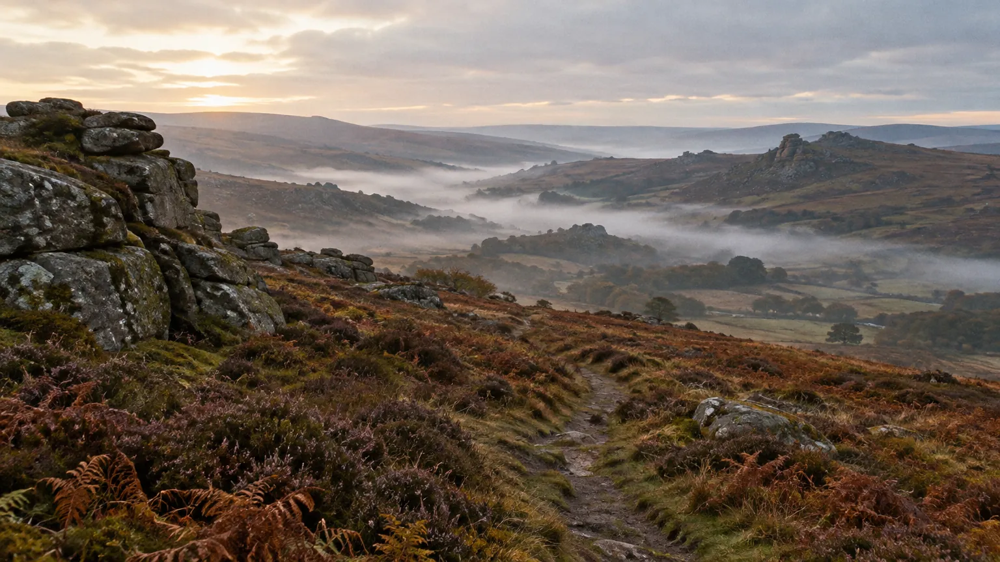
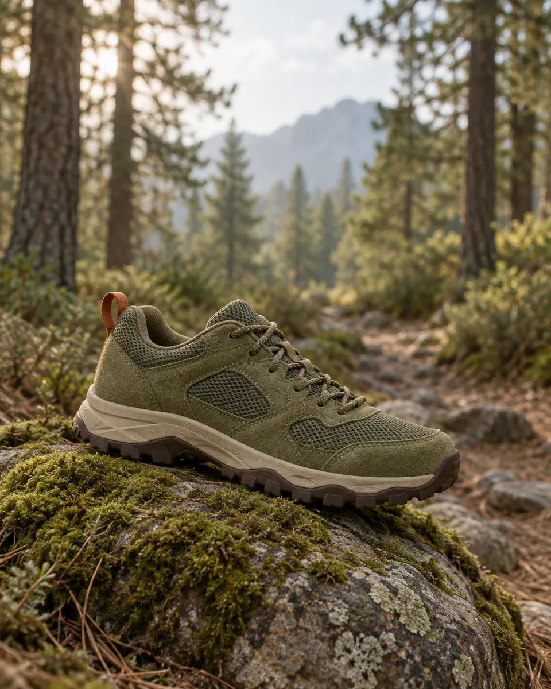
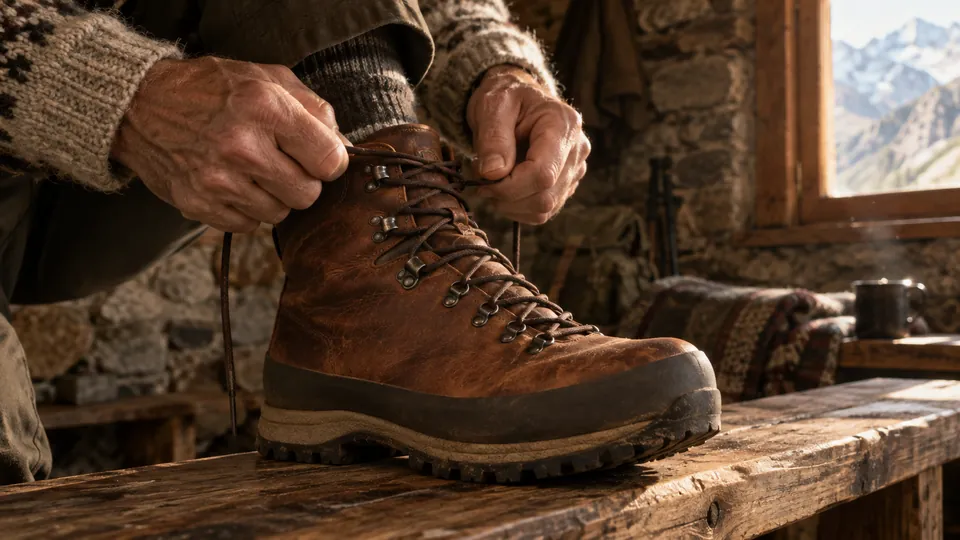
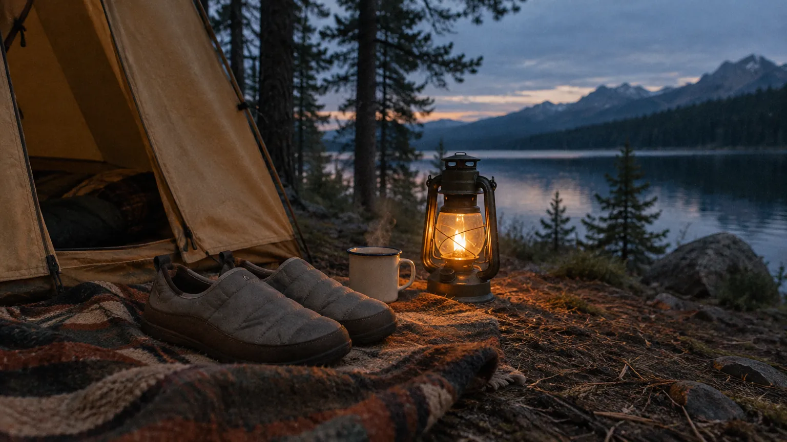
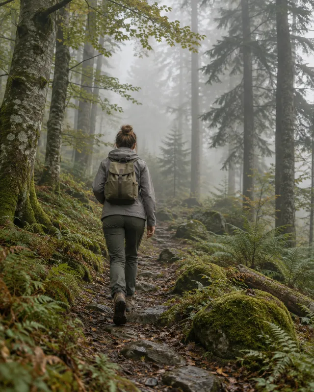
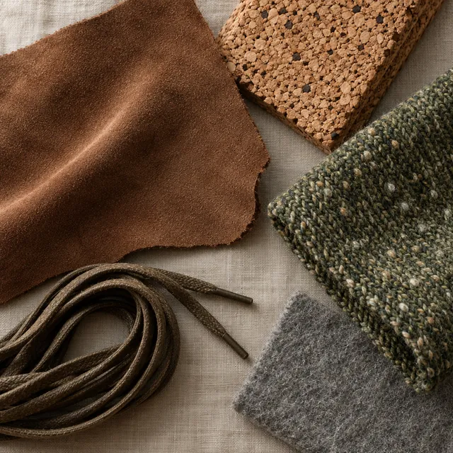

Autumn / Winter 2026 · Trail, hike, mountain & camp
Made for the long way round.
Est. on the trail, built to last.
Trail shoes and boots shaped around the ground they cross, with soles that grip like roots and uppers that age like good leather.

Our story
Shaped by the ground, not by the season.
KADENRA starts where the path does. Basalt cools into hexagons, and that pattern runs through everything we make: the Cellform cushioning zones in our midsoles, the lugs on every Rootgrip outsole, the print inside the box.
We build fewer, better shoes from recycled mesh, cork and leather from audited tanneries, and we design them to be resoled, repaired and worn for years.
Read our story →The FW26 film
Grounded. Unhurried. Weathered. Honest.
Thirty seconds across moor, forest, river and ridge. Press play for sound.


What we stand on
Four words we design by

Grounded
Low, stable platforms and lugs that follow the ground.

Unhurried
Built for the whole day out, not the first mile.

Weathered
Leather, suede and cork that get better with wear.
Honest
Plain materials, plainly described. Repairable by design.

Technology
Cellform. Rootgrip. Weatherline.
Three house technologies, named in plain words, so you know what is under your foot.
Journal
From the field

Design · 2 November 2026
Why hexagons?
Basalt cools into columns, and the columns crack into hexagons. Here is how that shape found its way into every KADENRA shoe.

Field notes · 19 October 2026
Lacing for long descents
Toes hitting the front of the boot on the way down? Three lacing changes that help, and when to use each one.

Collection · 5 October 2026
Thirty shoes, four kinds of ground
FW26 is our widest range yet. Here is how we built it so that every model has a job to do.